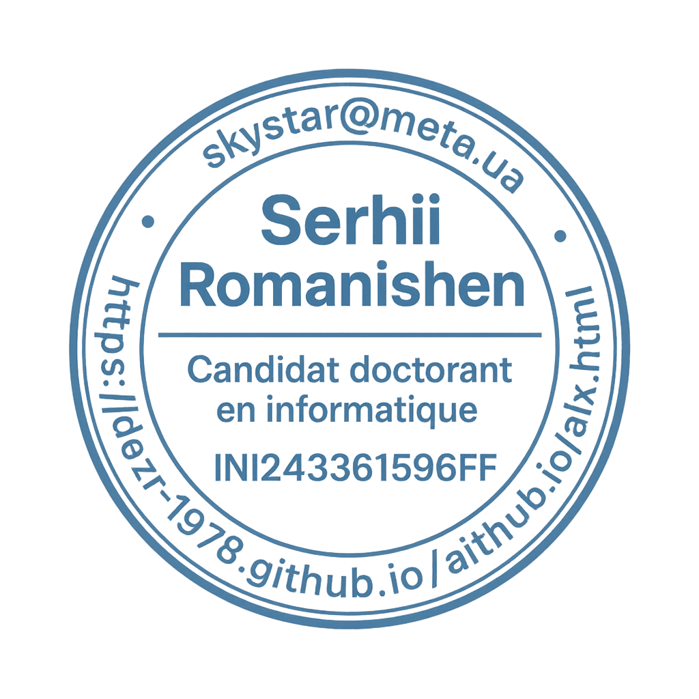

Candidat doctorant en informatique — Aix-Marseille Université
UMR7020 LIS — Laboratoire d'Informatique et Systèmes · Marseille, France
Systèmes intelligents d’aide à la décision pour l’optimisation des processus industriels : méthodes, applications et analyse des modèles hybrides d’IA.
Intelligent Decision Support Systems for Optimizing Industrial Processes: Methods, Applications, and Analysis of Hybrid AI Models.
01.10.2025 → 01.09.2028 · France / ANR
01.10.2025 → 30.09.2026 · Collège de France / Programme PAUSE

Serhii Romanishen · Candidat doctorant en informatique · INI243361596FF